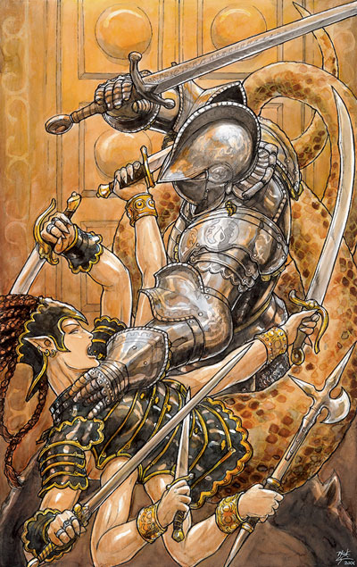
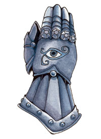

海姆 Helm（护卫之神）

费伦神系 中等神力
别称：监视者 The Watcher，警醒者 the Vigilant One
圣徽：往上指的铁手套，其上有只蓝色的监视之眼

居住界域：三圣之殿 House of the Triad
阵营：守序中立 LN
神职：守卫 guardians， 保护者 protectors，守护 protection
信徒：探险者，战士，警卫，佣兵，圣武士
牧师阵营：守序善良 LG，守序中立 LN，守序邪恶 LE
神域：守序 Law，计划 Planning，保护 Protection，力量 Strength
喜好武器：永恒警戒 Ever Watchful（重剑 bastard sword）
海姆是本源的守护者、永远警醒的卫兵，祂不允许任何事或物干扰其职责。祂常被描述成一位冷酷、无情、穿着全身铠甲的高大男子。事实上，祂也的确是一位严谨的纪律者，致力于执行被指派的任务。祂非常喜爱孩童，因此（相形之下）较能容忍他们犯下的（微小）过错。许多人都相信海姆会用自己的性命守护交托给祂的任务－关于这点祂总是沉默以对。
在危机四伏的费伦北部，海姆的教会曾被视为代表稳定与安全的基石，其成员矢志保卫文明，使其免受危险荒野与地 底怪物的威胁，因而极受尊敬。然而，在过去的十四年以来，北方海姆教会的成员数量与影响力却都不断萎缩。这是因为海姆在动荡时期（Time of Trouble）中忠实尽责地履行自己的职责－阻止其它神祇离开费伦大陆。圣者危机（Avatar Crisis）造成的死亡与毁灭使得许多其它信仰对警醒者及其信徒产生莫大的敌意（尤其是蜜丝特拉 Mystra、班恩 Bane、以及扥姆 Torm的信徒）。至于在费伦大陆南部，海姆在动荡时期中所扮演的角色并未如在北部那般受到敌视，反而是近来的事件玷污了警醒者及其信众的名声－据传回费伦大陆本土的消息指出，海姆教会在新近发现的马兹提克（Maztica）大陆上断然地对当地民众进行严酷的镇压行动，并掠夺当地的财富。唯一使教会得以逐 渐恢复元气的因素，是出于抵御逐渐增加的邪恶力量，因此需要更多经验丰富的守卫。
海姆的牧师在清晨朝阳初升（或天刚破晓）时祈祷以获得神 术。信徒们将「盾集庆典」（Shieldmeet）视为圣日，在当天举行「海姆光耀圣典」（Crermony of Honor to Helm）。而海姆信仰中最为神圣的两个仪式分别是「献身真理」（Consecration of a Postulant）及「圣物奉献」（Consecration of a Glymtul）－前者为接纳寻求真理者成为新进牧师的仪式；后者为将一件特殊物品奉献给海姆的仪式（"glymtul"在古语中意指「所爱之物」）。此外，尚有名为「净化」（Purification）与「至圣警醒」（Holy Vigil）的特殊仪式－前者是迷失信念的信徒重返坚信，或是为自身警醒、忠诚、名誉所有缺失的信徒洗涤罪恶；后者则是当一位牧师阶级提升举办的仪式，较高阶的牧师会透过仪式使受试炼者的武器浮在空中，参与升阶的受试炼者必须整夜集中精神使其维持盘旋，以证明自己的意志坚定。海姆的牧师绝不可命令不死生 物，即便是邪恶牧师亦只可使用责退（rebuke）。绝大多数的海姆牧师都会兼职成为战士或圣武士。
历史/与众神的关系 History/Relationship：
海 姆总是身着厚重的全身铠甲，以象征自己所背负的重担。身为永恒的监视者，祂亦明了整个世界的终结必定会在祂的守护之下到来。然而，祂总是善尽职责、毫无怨 言，愿意为了守护自身的义务而付出生命。为此祂不可避免地成为满腹阴谋的班恩（Bane）、希瑞克（Cyric）、以及莎儿（Shar）的死敌，只因祂们卑鄙的计划是费伦大陆的永恒威胁。祂也尽其所能地抵御卡瑞茍斯（Garagos，战争之神）与塔烙斯（Talos）那难以羁束的狂怒与毁灭的冲动。海姆亦 完全无法认同麦斯克（Mask）的惯窃与嘲讽，只是单纯地将阴影之王视为费伦大陆的另一股威胁。在众多的善良神祇中，唯有扥姆（Torm）能了解海姆坚守义务的冷漠固执，因此这两位神祇之间的关系十分紧密－在祂们共同的命令之下，两个教会已勉强地开始捐弃成见、重修旧好。
教义 Dogma：
无 论如何，绝对不可辜负自己的职责。汝当随时保持警醒，谨慎地坚守、等候、监视，公正勤勉地执行身负的命令。汝当保护弱者、贫者、伤者、幼者，绝不可因自己 或任何理由而将之牺牲。汝当研究、了解自己的敌人，随时都要做好准备迎接敌人（可能）的攻击。汝当仔细地保养自己的武器，如此一来当你有所需要时它们才能发挥最大的效用。汝当详尽仔细地计划胜过鲁莽的行动。永远服从命令－假如它们符合海姆的教导。身为守护者与保卫者，汝当善尽自身优秀与纯净忠诚。
牧师与神殿 Clergy & Temples：
海姆的牧师们相信唯有透过善尽自身优秀的警醒与纯净的忠诚，方可回复警醒者原有的力量。身为守护者与保卫者，他们已开始四处训练守卫，并宣传唯有通过警醒者试炼的信徒才真正可靠。扥姆的教会冷淡地附和此种宣传－以维持双方的敦睦。
海 姆的神殿一律都建成于防守的巨大建筑，大多数都是邻近危险邪恶地区的防御堡垒，形成抵御强大敌人的防御阵线。由于警醒者的牧师都是优秀的守卫（或守卫领 队），因此许多大型城市都会有一座海姆的神殿或圣坛。不论坐落于何处，信徒们总是警醒地不断监视他们的圣堂。海姆神殿常以旁观者眼魔（spectator，眼魔中较小的一种）作为守卫，这点使班恩教会与其眼魔同盟深感愤怒。在神殿众多防御工事、军械库、礼拜堂的核心，是一处存放许多全 身铠甲的中央祭坛，这些铠甲都是深受敬重的海姆斗士所使用过的神圣遗物。海姆神殿乐于保护所有寻求庇护之人，但如果要求庇护者被指控涉有罪嫌，牧师们也会要求他服从当地的律法与正义－如果的确是公正的判决。由于许多人都明白海姆的追随者会尽力确保他们能得到公正的审判，因此都愿甘冒风险接受警醒者神殿的条 款。
海姆的牧师穿着洁净无瑕的闪亮全身铠甲（通常具备「永明特殊能力」，everbright）与不具面罩的头盔（其上通常有一根羽毛装 饰）。他们有时会在盔甲外套上红色的披风或铁灰色的短大衣，且会在这套衣物（或盔甲本身）的胸口与背心处各标上一只永不阖上的巨眼。在费伦南部地区，牧师们则常会穿着手工细致的全身铠甲，其上镶嵌着宝石与繁复的金缕线，衬托胸口与背心的巨大金色眼睛。至于在那些对穿着重铠的牧师不慎欢迎的地区，牧师们则只 保留了厚重的肩甲－但仍会戴着头盔。
海姆教会内部有着非常严谨明确的阶级划分，每位成员都可以轻易地辨认自己与他人的阶级。在过往的许多 世纪中，所有的教会成员原本都直属一位「最高警戒者」（Supreme Watcher）领导，但自从海姆警戒之年（Year of the Watching Helm，992DR）之后便不再设置此职位。据谣传（极少有人胆敢在海姆信徒面前提及），这是因为当时那位警醒者的最高代言人因内心腐化而堕落，警醒者为此降临凡间摧毁这位背弃祂神圣信赖的叛徒。自该次净化行动后，数世纪以来海姆的教会都由「海姆评议会」（Council of Helms，由教会内的高阶成员组成）共同领导，而评议会的主要职责就是保持警醒，避免教会内部任何的可能腐败－一项由内侵蚀的潜伏威胁。
许 多海姆的堡垒神殿都会拥有一支直属的强大部队（或支持某一守卫团体）。「唯一真相教团」（Companions of One Ture Vision）是个由许多虔诚且积极行动的战士与牧师所组成的团体，其成员以坚定的忠诚著称。该教团的强大部队总是毫不迟疑地执行（即使是最艰难的）任务，尽一切可能对抗最艰难的情况。然而，由于该教团最近派遣大量人手参与海姆教会在马兹提克大陆的镇压行动，因此声誉也大受影响。其它较小型的团体包括了 由战场医疗者组成的「逝者看护」（Watchers Over the Fallens）、由虔诚守卫们组成的「永恒警戒骑士团」（Everwatch Knights，许多海姆神殿都试图雇用他们以增加收入）、以及由圣武士所组成的「神之眼」（the Vigilant Eyes of the Deity）骑士团。
海姆的化身 Helm's Avatar：
自动荡时期之后，海姆已愈来愈不愿以化身型态降临费伦大陆（祂通常只在一位高阶牧师或神殿遭逢直接威胁时才会响应呼求而降临）。祂的化身形象是一位身着全身铠甲的巨大男子，且戴着遮住面孔的头盔。祂每次现身时的身高都不尽相同。